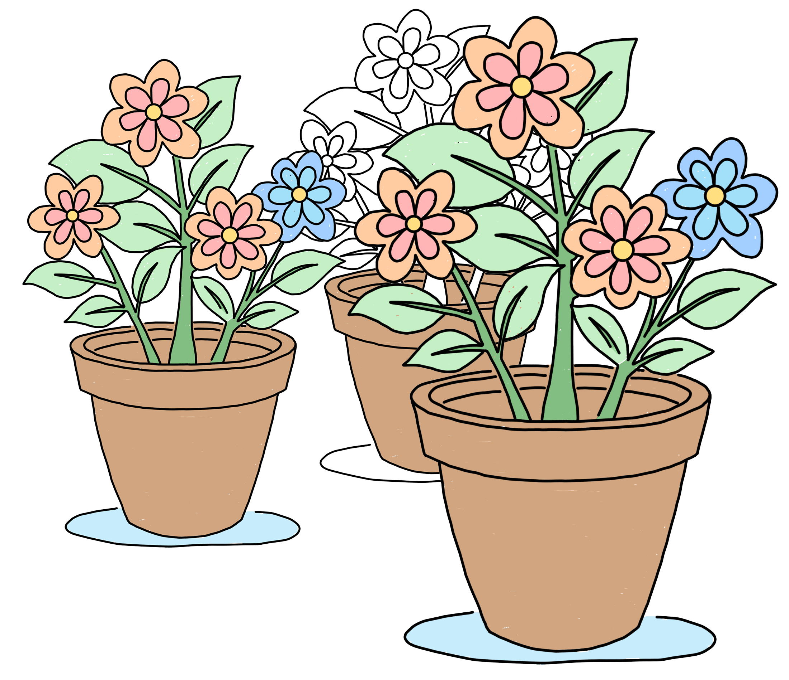
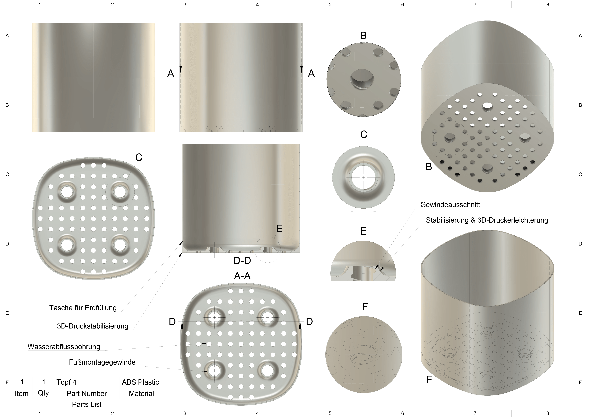
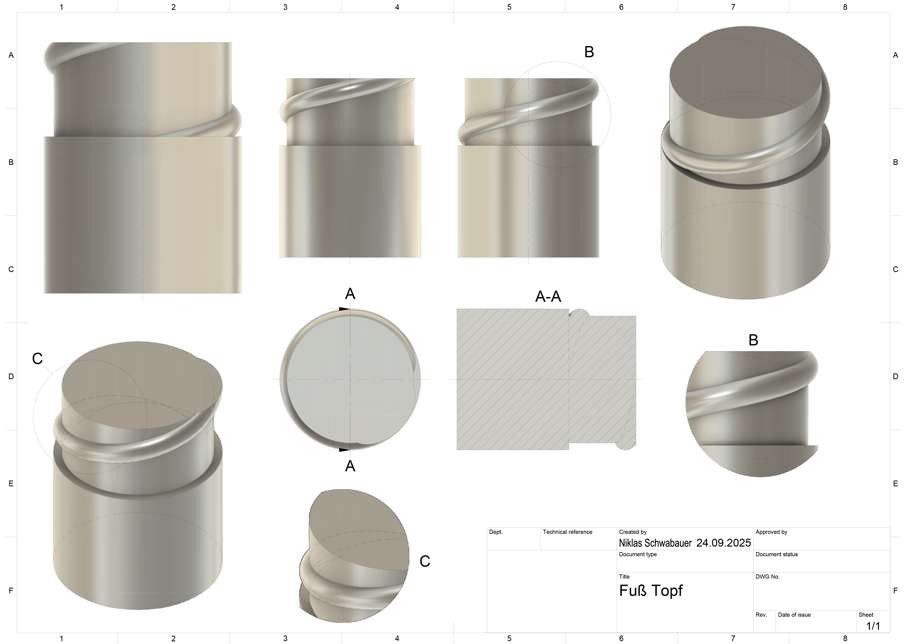

Innentöpfe
Die Natur konstruiert nicht,
sie perfektioniert.
– Charles Darwin

Ausgangslage – warum eigene Innentöpfe?
Blumentöpfe gibt es in zahllosen Formen und Größen, doch oft fehlt es an einer durchdachten Lösung im Detail. Besonders bei quadratischen Pflanzgefäßen stellte sich im Alltag immer wieder die gleiche Schwierigkeit: passende Innentöpfe waren kaum zu finden. Entweder stimmten die Maße nicht, oder die Einsätze boten keine ausreichende Stabilität und Entwässerung.
Die naheliegende Lösung: ein eigenes System entwickeln, das nicht nur exakt passt, sondern auch funktional überzeugt. Damit entstand die Idee, individuell konstruierte Innentöpfe zu fertigen – maßgeschneidert auf den jeweiligen Pflanzkübel, langlebig und mit einer klaren Priorität auf Alltagstauglichkeit.

Materialwahl – vom PLA zum PETG
Während PLA für viele 3D-Druck-Projekte eine einfache und optisch saubere Lösung bietet, stößt es bei dauerhafter Belastung im Außenbereich schnell an Grenzen. UV-Strahlung, Feuchtigkeit und Temperaturschwankungen können das Material aufweichen oder verspröden.
Für die Pflanzgefäße fiel die Wahl deshalb bewusst auf PETG. Dieses Material ist deutlich widerstandsfähiger: es ist UV-beständig, wasserunempfindlich und zugleich schlagzäh. Eigenschaften, die gerade bei ständig feuchten Umgebungen entscheidend sind. So wird sichergestellt, dass die Innentöpfe nicht nur kurzfristig funktionieren, sondern auch über Jahre hinweg ihre Form und Stabilität behalten.
Konstruktion & Umsetzung
Die Konstruktion der Innentöpfe erfolgte in Fusion 360 mit dem Ziel, maximale Funktionalität bei minimalem Materialeinsatz zu erreichen. Der Boden besitzt eine Stärke von 1,6 mm; an den Stellen, an denen die Füße eingeschraubt werden, ragen sechs Millimeter hohe Aufbauten heraus. Diese bieten Platz für genau eine Gewindewindung – ausreichend für sicheren Halt, gleichzeitig so gestaltet, dass sie ohne Supports zuverlässig druckbar bleiben. Die Füße selbst werden nicht mit 100 % Infill gefertigt, da ihre Belastung geringer ist; bei den Töpfen hingegen ist eine vollständige Füllung entscheidend, um Stabilität und Langlebigkeit zu sichern.
Die Wandstärke variiert zwischen 1,0 mm und 1,6 mm, je nach äußeren Gegebenheiten. Bei günstiger Geometrie mit abgerundeten Kanten genügt bereits 1,0 mm, während bei problematischeren Gefäßen die stabilere Variante gewählt wird. Die Entwässerung erfolgt über eine systematische Anordnung von 5 mm-Bohrungen, deren Abstände bewusst auf sechs Millimeter optimiert sind. So entsteht ein symmetrisches Muster, das maximale Durchlässigkeit bei ausreichender Festigkeit gewährleistet.
Die Entwicklung durchlief mehrere Varianten: Ursprünglich wurden die Füße über eingesetzte Muttern und Schrauben fixiert, später über selbstschneidende Schrauben. Beide Ansätze erwiesen sich als funktional, jedoch aufwendig und anfälliger. Mit den nun direkt gedruckten Gewinden konnte eine einfache, stabile und rostfreie Lösung realisiert werden. Alle Füße sind untereinander austauschbar, können in unterschiedlichen Höhen gefertigt werden und gleichen dadurch selbst unebene Böden zuverlässig aus.
Auch im Druckprozess erwiesen sich die Modelle als unproblematisch. Die Größen blieben im Rahmen des Bambu Lab A1, sodass Druckzeiten und Materialverbrauch überschaubar sind (selten über 100 g pro Topf). Nachbearbeitung ist meist nicht erforderlich; lediglich bei Radien am Boden kann gelegentlich etwas Handarbeit anfallen.

Ergebnis & Alltagstauglichkeit
In der praktischen Anwendung haben sich die Innentöpfe voll bewährt. Sie sind stabil, standfest und sorgen zuverlässig für eine saubere Entwässerung. Der größte Vorteil liegt jedoch in der optischen Wirkung: Durch die maßgenaue Passform und die unauffällige Farbwahl – bislang hauptsächlich Grautöne – fügen sie sich so unauffällig in das Gesamtbild ein, dass sie kaum wahrnehmbar sind.
Auch das Feedback aus der Familie bestätigt den Erfolg: Die Töpfe sehen besser aus und funktionieren mindestens so gut wie handelsübliche Alternativen. Dank der modularen Bauweise können sie an jede Form angepasst werden und bieten eine langfristige Lösung ohne Kompromisse.
Für die Zukunft sind weitere Optimierungen denkbar, insbesondere eine verstärkte Wandgestaltung im oberen Bereich. Diese könnte zusätzliche Stabilität bieten, ohne den Materialverbrauch nennenswert zu erhöhen. Doch schon jetzt gilt: Die Töpfe erfüllen exakt den Zweck, für den sie entwickelt wurden – schlicht, funktional und dauerhaft zuverlässig.
Downloads